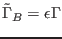
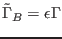
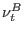
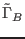
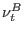
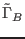

Next: Update Up: Fortran: Module Interface turbulence: Previous: Update Contents
INTERFACE:
subroutine kolpran(nlev)DESCRIPTION:
Eddy viscosity and diffusivity are calculated by means of the relation of
Kolmogorov and Prandtl from the updated values of  ,
,  and the
stability functions according to (44). In addition, the counter-gradient
term
 is updated, see (35) and (75).
and the
stability functions according to (44). In addition, the counter-gradient
term
 is updated, see (35) and (75).
Note, that this routine relies on the fact that the lowest and
uppermost values of the stability functions and of  ,
,  , and
, and  have been computed using the correct boundary conditions. No
special treatment of
have been computed using the correct boundary conditions. No
special treatment of  , , and

at the boundaries is processed.
, , and

at the boundaries is processed.
USES:
IMPLICIT NONEINPUT PARAMETERS:
integer, intent(in) :: nlevREVISION HISTORY:
Original author(s): Karsten Bolding, Hans Burchard,
Manuel Ruiz Villarreal, Lars Umlauf